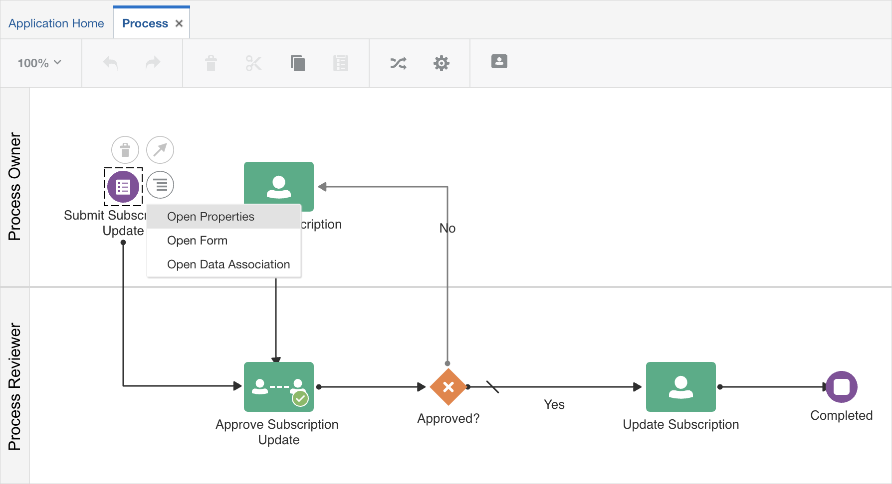
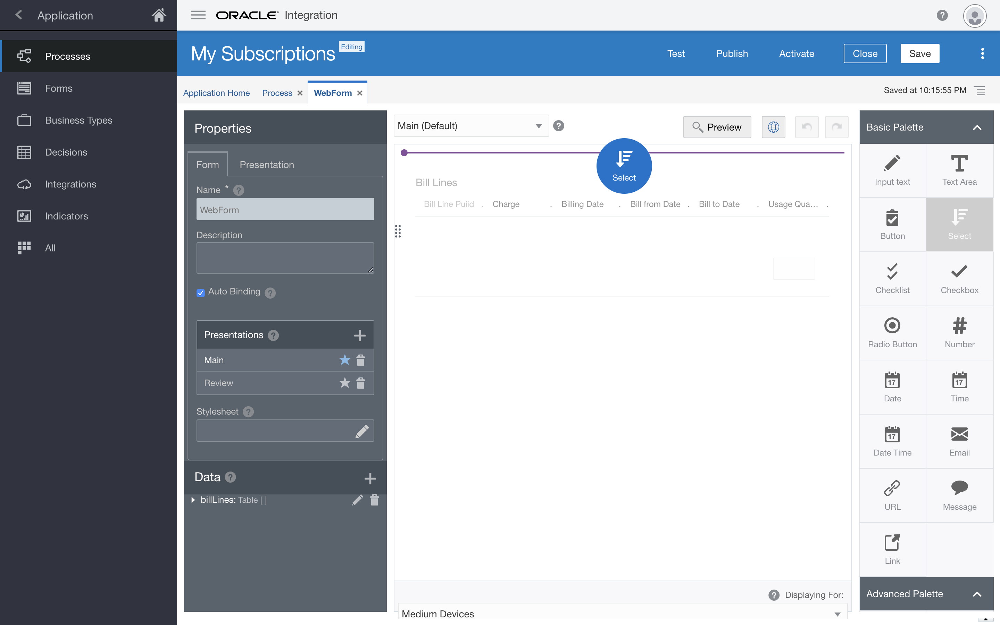
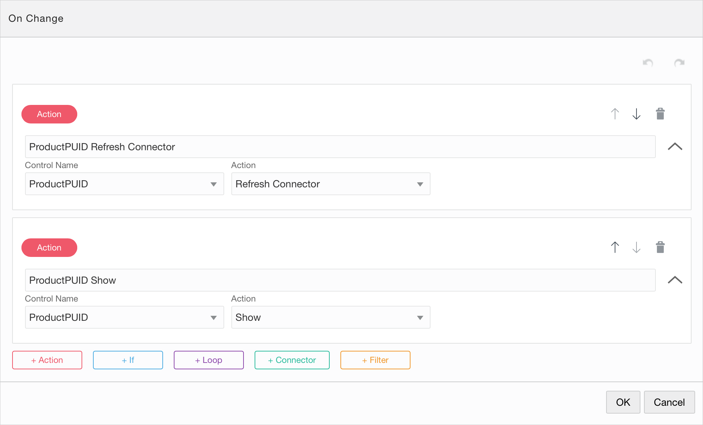
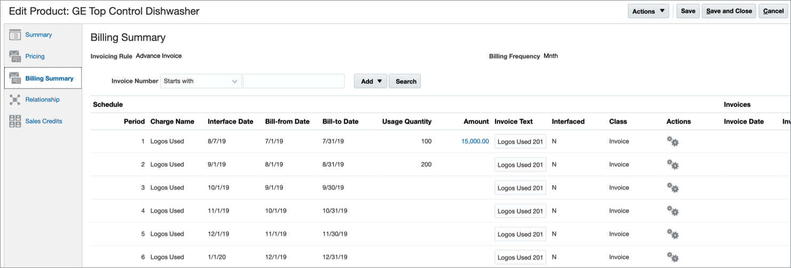

Oracle Integration Process - Oracle OpenWorld Hands-On Lab
Oracle Integration Process - Oracle OpenWorld Hands-On Lab
Before You Begin
- Enter your user number:
We'll use this user number to customize the integration names in this tutorial. If you leave this blank, these names will contain a placeholder that you can replace with your user number. - Some steps in this tutorial have a
 icon next to them. Click this icon to copy the name of snippet to your clipboard and then paste it in Oracle Integration.
icon next to them. Click this icon to copy the name of snippet to your clipboard and then paste it in Oracle Integration.
Background
In this hands-on lab, you'll create process to automate the updating of an invoice in Oracle Engagement Cloud.
We'll base this lab on the subscription billing demo discussed during other Oracle OpenWorld sessions, and on the previous lab where you created an integration.
The objective is to automate the update process to bill subscriptions for use of assets. The process you'll create will let you update the number of subscriptions for a particular product.
Sign In
Access to Oracle Integration is secured through Oracle Identity Cloud Service. Users may be granted access to all the Oracle Integration environments in a cloud tenancy, or they may be restricted to specific environments. They may be assigned different roles in each environment.
- Click the Oracle Integration bookmark on your browser to open the Oracle Integration instance.
Enter your user name and password.
- Your user name is
OICTraining1ic
This is the prefix OICTraining1ic followed by the user number you were assigned. - Your password is listed in the document on your desktop.
- Oracle Integration will log all your design activities with this user name.
The Welcome page appears. Check out the tour, videos, and links to learn more. Keep scrolling to find more useful links.
- Your user name is
Click Open Home.
The Home page displays an overview with the current state of your instance. You can drill down to get information about available components, tasks, and instances.

Create a Process
You’ll start with a predefined process and make changes to it.
- From the Home page’s Navigation menu, select Processes, and then select Process Applications.
- Click Create.
- Hover over the Start with a QuickStart box, and then click Browse.
Locate the Subscription Management QuickStart, and click its Create button.

- In the Create Application dialog, in the name field, enter
My Subscriptions. Click Create.
The quickstart application appears.

Edit the Form
You’ll add two controls to the form that each call the source system and return values for customers to choose from.
On the QuickStart App page, click the Switch to Application View link.
- On the Processes page, click the process to open it in the structured process editor.
- Click the purple Start activity titled Submit Subscription Update.
Click
 and select Open Properties.
and select Open Properties.In the How will the end user identify the process? section, in the Title field, enter
User Submit Subscription Update.Remember this name for later, when you run the process application.
Close the Properties pane and select the same activity again.
Click
and select Open Form.The form editor appears. It contains a central canvas, a side pane for setting properties for selected controls, and a side palette pane with basic and advanced controls you can add to the form.
Add a Select control to select the subscription:
Drag and drop a Select control from the Basic Palette to the top of the form.

Select the control you just added.
Notice how the Properties pane changes: when you select a control, the properties panel displays its properties. When you click outside of a control, the properties panel displays the entire form’s properties.
- In the Properties pane, locate the General tab.
- In the Name field, enter
SubscriptionPUID. - In the Label field, enter
Subscription. Click outside the new control.
Notice how the label is now Subscription and the select control is a dropdown field.
Add a Select control to select the product:
- In the form editor, drag and drop a Select control below the one you just created.
- Select the control you just added.
- In the Properties pane, locate the General tab.
- in the Name field, enter
ProductPUID. In the Label field, enter
Product.
- Click the
 Preview button to see the new fields in your form.
Preview button to see the new fields in your form. - Click
 to close the preview.
to close the preview.
Link the Integrations
Here you’ll add two active integrations for use in your process.
- From the Navigation menu, select Integrations.
- Click Browse Integrations.
- In the Use an Integration dialog, select Get Subscriptions and click Create.
On the Integrations page, click Create, and then click Use an Integration.
- On the Use an Integration dialog, select Get Subscription Products by Subscription, and then click Create.
Both integrations are now available.
Call the Integrations
Now you’ll configure the new controls to each call an integration and return values. The second control will depend on the first.
Configure the Subscription List
- Select the WebForm tab to display the form editor.
- On the form canvas, select the Subscription control.
- In the Properties pane, scroll down until you see the Options Source section, and select Connector.
- From the Connector list, select GetSubscriptions.
- From the Resource list, select resources.
- From the Operation list, select getResource.
- In the Response section, in the Options List field, enter
response.items. - In the Label Binding field, enter
subscriptionand then select subscriptionTitle. In the Value Binding field, enter
subscriptionand then select subscriptionNumber.
- Click Preview.
- Click the Subscription list, and notice subscription options returned from the integration appear.
- Click to close the preview.
Configure the Product List
- On the Form canvas, select the Product control.
- In the Properties pane, scroll down until you see the Options Source section, and select Connector.
- From the Connector list, select GetSubscriptionProductsBySubscription.
- From the Resource list, select resources.
- From the Operation list, select getResource.
- In the Template Parameters section, from the SubscriptionPUID field, select Control value.
- From the field next to SubscriptionPUID, select SubscriptionPUID.
- In the Response section, in the Options List field, enter
response.items. - In the Label Binding field, enter
productand then select productName. - In the Value Binding field, enter
subscriptionand then select subscriptionProductPuid. - Click Preview.
Click the Product list.
A message displays an error occurred retrieving the data.
- Click to close the preview.
- On the form canvas, select the Product control.
- In the Properties pane, in the Default Value section, select Skip Upon Load.
- Scroll up until you find the section before the Options Source section, and then select Hide.
Notice that the Product control is disabled to show it's hidden.
- On the Form canvas, select the Subscription control.
In the Properties pane, scroll down until you find the Events section.
Click
 .
.The On Change dialog appears.
From the list next to the Event Name field, select On Change.

- Click to display the Expression Editor dialog.
Add an action to load the Product list values when the user selects a subscription:
- Click + Action.
- From the Control Name list, select ProductPUID.
- From the Action list, select Refresh Connector.
Add an action to show the values for the Product list values when the user selects a subscription:
- Click + Action.
- From the Control Name list, select ProductPUID.
- From the Action list, select Show.
- Click OK.
Let's preview the behavior you just added to the form controls:
- On the Form canvas, click Preview.
On the Preview page, from the Subscription list, select Computer Service and Rentals -26009.
Notice how the
Product list displays its recently loaded values after the Subscription field changes.- From the Product list, select GE Top Control Dishwasher.
- Click to close the preview.
- On the Form canvas, click
Configure the Bill Lines Table
Let’s configure the table to display values returned from an integration, and to refresh when the selected product changes.
- From the Navigation menu, select Integrations.
- On the Application Home tab, click Create.
- Select Use an Integration.
- In the Use an Integration dialog, select Get Subscription Product Bill Lines by Product.
- Click Create.
- Select the WebForm tab to return to the Form Editor page.
- Select the Bill Lines table control.
Configure the connector:
- In the Properties pane, select Use Data from Connector.
- From the Connector list, select GetSubscriptionProductBillLinesByProduct.
- From the Resource, select resources.
- From the Operation list, select getResource.
- In the Template Parameters section, from the SubscriptionPUID field, select Control value.
- From the field next to SubscriptionPUID, select ProductPUID.
- From the SubscriptionPUID field, select Control value.
- From the field next to SubscriptionPUID, select SubscriptionPUID.
- In the Response section, in the Options List field, enter
response.items. - Click the BillLinePuid field, and select billLinePuid.
- In the InvoiceText field, enter
invoiceand then select invoiceText. - In the UsageQuantity field, enter
usageand then select usageQuantity. - Select Skip Upon Load.
- Scroll up and select Hide.
- On the Form canvas, select the Product control.
- In the Properties pane, scroll down until you find the Events section.
- Click .
- From the list next to the Event Name field, select On Change
- Click to display the Expression Editor dialog.
Add an action that refreshes the table when the selected subscription and product value change:
- Click + Action.
- From the Control Name list, select BillLines.
- Leave the default selection (Self) for the Which? field as is.
- From the Action list, select Refresh Connector.
Add an action that shows the table when the selected subscription and product value change:
- Click + Action.
- From the Control Name list, select BillLines.
- Leave the default selection (Self) for the Which? field as is.
- From the Action list, select Show.
- Click OK.
Let's preview the behavior you just added to the table control:
- On the Form canvas, click Preview.
On the Preview page, from the Subscription list, select Computer Service and Rentals -26009.
Notice how the
Product list displays its recently loaded values after the Subscription field changes.- From the Product list, select GE Top Control Dishwasher.
- In the Bill Lines table, update the Usage Quantity for the first row to
100. - Click to close the preview.
- On the Form canvas, click
Automate the Update Task
Your last task is to configure an integration that updates the source system, Oracle Engagement Cloud, with all entries users make in the form.
Link an Integration
- From the Navigation menu, select Integrations.
- On the Application Home tab, click Create.
- Select Use an Integration.
- In the Use an Integration dialog, in the Search field, enter update, and then select Update Subscription Product Bill Lines.
- Click Create.
- Select the Process tab to display the process editor.
- Select the Update Subscription human task from the flow.
- Click
 .
. - Insert the integration you previously linked onto the flow line.
- Expand the Integrations category in the BPMN palette.
- Drag and drop the UpdateSubscriptionProductBillLines integration to the same position on the flow as the deleted human task.
Configure the Integration’s Input
- Select the integration.
- Click .
Select Open Data Association.
The Data Association page appears.
Click .
This action automatically maps the subscription and product values users select in the form to the corresponding source fields in Oracle Engagement Cloud:
- Process.Data Object.webFormDataObject.subscription ⟶ subscriptionPUID
- Process.Data Object.webFormDataObject.product ⟶ subscriptionProductPUID
- Add a third data association for the bill lines table:
- In the Data Objects tree, expand Process.
- Expand Data Object.
- Expand webFormDataObject.
- Drag and drop billLines to the Process section.
- Under Update subscription product bill lines, open body.
- In the Update subscription product bill lines tree, expand body.
Drag and drop billLine from the Update subscription product bill lines tree to the blank field that maps the value for webFormDataObject.billLines.
The data association icon turns red and an error is displayed indicating that the arrays cannot be mapped as is.
Create a transformation to map bill lines values:
- Click
 .
. Select Transform.
The Transformation dialog appears.
- In the Transformation dialog, enter
Bill Line Click Create.
The Data Association page changes to the Transform page.
- Drag and drop to associate billLinePuid and billLinePUID.
Drag and drop to associate string(usageQuantity and usageQuantity.

- Click Save.
You exit the Transform page and return to the Data Association page.
- Click
Configure the Integration’s Output
Select the Output tab.
- In the Data Objects tree, expand Data Object.
- In the Data Objects tree, click .
In the Add Data Object dialog, complete these entries:
- In the Namefield, enter
updateBillLinesResponse. - In the Data Type section, select Business.
- Select OracleIntegrations.UpdateSubscriptionProductBillLines.Response .
- In the Namefield, enter
- Click Add.
Click .
An association between bodyOutput and updateBillLinesResponse was automatically configured.
Click Apply.
All data associations are saved, and you return to the Process tab.
Test the Process Application
Let’s see the subscription update process in action, as a user would.
Click Test.
- Click Activate.
In the Activate to Test dialog, ensure that Add Me to All Roles is selected, and click Activate.
A confirmation message informing you that the application was successfully activated appears.
- Click OK.
Click Try in Test Mode.
The My Apps page appears in a new tab in your web browser.
In the Search field, enter
User Submit Subscription Update, and select your process .The form you edited displays as the first step in the process.
From the Subscription list, select Computer Service and Rentals -26009.
- From the Product list, select GE Top Control Dishwasher.
- In the Bill Lines table, update the Usage Quantity for the first row to
100, and the next row to200. Click Submit.
An instance was created.
- From the Navigation menu, select My Tasks.
Select the task you just created.
Notice the quantities you just added in the form.
Click APPROVE.
The quantities are updated in the source system.
